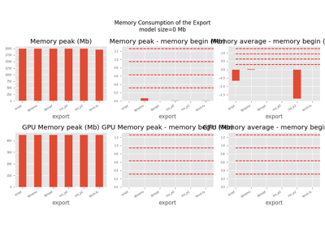
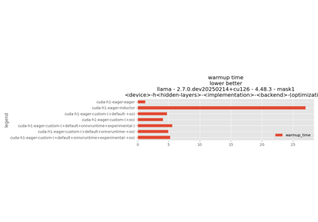

Note
Go to the end to download the full example code.
101: Profile an existing model with onnxruntime
Profiles any onnx model on CPU.
Preparation
import os
import numpy as np
import matplotlib.pyplot as plt
from experimental_experiment.args import get_parsed_args
try:
from onnx_extended.tools.js_profile import (
js_profile_to_dataframe,
plot_ort_profile,
)
except ImportError:
js_profile_to_dataframe = None
try:
filename = os.path.join(
os.path.dirname(__file__ or ""), "data", "example_4700-CPUep-opt.onnx"
)
except NameError:
filename = "data/example_4700-CPUep-opt.onnx"
script_args = get_parsed_args(
"plot_profile_existing_onnx",
filename=(filename, "input file"),
repeat=10,
expose="",
)
for att in "filename,repeat".split(","):
print(f"{att}={getattr(script_args, att)}")
filename=data/example_4700-CPUep-opt.onnx
repeat=10
Random inputs.
def create_random_input(sess):
feeds = {}
for i in sess.get_inputs():
shape = i.shape
ot = i.type
if ot == "tensor(float)":
dtype = np.float32
else:
raise ValueError(f"Unsupposed onnx type {ot}.")
t = np.random.rand(*shape).astype(dtype)
feeds[i.name] = t
return feeds
def create_session(filename, profiling=False):
from onnxruntime import InferenceSession, SessionOptions
if not profiling:
return InferenceSession(filename, providers=["CPUExecutionProvider"])
opts = SessionOptions()
opts.enable_profiling = True
return InferenceSession(filename, opts, providers=["CPUExecutionProvider"])
sess = create_session(script_args.filename)
feeds = create_random_input(sess)
sess.run(None, feeds)
[array([[0.72855246, 0.02447323, 0.00676208, ..., 0.03564662, 0.2247183 ,
0.00864245],
[0.07368015, 0.33254012, 0.41290998, ..., 0.10643362, 0.25473404,
0.5328623 ],
[0.63477874, 0.20789556, 0.30758914, ..., 0.23665105, 0.939141 ,
0.17527866],
...,
[0.38396525, 0.04740012, 0.13021263, ..., 0.34929547, 0.24148263,
0.3855343 ],
[0.20149209, 0.00282284, 0.47903088, ..., 0.47465986, 0.3254614 ,
0.35786137],
[0.31459856, 0.97603095, 0.2436356 , ..., 0.49409512, 0.22780134,
0.24517713]], shape=(128, 1024), dtype=float32), array([[0.94233704, 0.52909315, 0.58695745, ..., 0.41835085, 0.5058372 ,
0.7539116 ],
[0.9094274 , 0.31762555, 0.08836524, ..., 0.69485027, 0.7252216 ,
0.90667856],
[0.14727905, 0.94461304, 0.0431032 , ..., 0.39859906, 0.6936953 ,
0.6691915 ],
...,
[0.3815793 , 0.9163176 , 0.3223815 , ..., 0.36533841, 0.48837924,
0.23693053],
[0.9557977 , 0.08100956, 0.23538588, ..., 0.4608992 , 0.5834807 ,
0.8392827 ],
[0.5725944 , 0.6901993 , 0.9504979 , ..., 0.90218264, 0.15316151,
0.17752048]], shape=(1024, 30752), dtype=float32), array([[0.00388789, 0.5094124 , 0.01741875, ..., 0.2359098 , 0.22044317,
0.7783418 ],
[0.6851099 , 0.41560388, 0.11552879, ..., 0.31991032, 0.64670897,
0.54771674],
[0.59583354, 0.6687971 , 0.07113277, ..., 0.48981124, 0.37668607,
0.6796644 ],
...,
[0.25177452, 0.24511255, 0.11168886, ..., 0.50105804, 0.1965675 ,
0.09671581],
[0.23641057, 0.9480263 , 0.91522706, ..., 0.18915614, 0.7540325 ,
0.05303712],
[0.8784051 , 0.6074388 , 0.734808 , ..., 0.77906704, 0.06729729,
0.05801225]], shape=(10, 128), dtype=float32), array([[[[ 7.8783054, 8.340313 , 6.6339593, ..., 8.126391 ,
9.249327 , 9.277383 ],
[ 7.0479584, 6.91977 , 7.0554876, ..., 9.009191 ,
8.346474 , 9.17487 ],
[ 6.3038187, 7.267228 , 6.9509244, ..., 7.3701406,
8.027478 , 9.10629 ],
...,
[ 8.694103 , 7.7807713, 7.906612 , ..., 7.4153666,
7.0969305, 6.992135 ],
[ 8.309395 , 8.10907 , 8.276824 , ..., 6.5624537,
8.08814 , 8.04316 ],
[ 8.712026 , 8.523864 , 8.909444 , ..., 6.5453224,
7.646828 , 6.9231877]],
[[ 6.2800655, 6.905085 , 5.4207616, ..., 6.9895983,
8.249678 , 8.129031 ],
[ 5.8315806, 5.791148 , 5.6282 , ..., 7.6022434,
6.909512 , 8.28866 ],
[ 5.441445 , 5.964866 , 6.414867 , ..., 6.7379165,
6.421492 , 7.8939095],
...,
[ 7.064456 , 7.4695807, 7.4688544, ..., 6.5670385,
6.7917404, 6.3401046],
[ 7.373886 , 7.364203 , 7.090713 , ..., 6.2965503,
7.086476 , 7.0671806],
[ 7.4993887, 7.7148128, 8.301306 , ..., 6.23144 ,
6.358912 , 5.8817387]],
[[ 6.885192 , 6.427851 , 5.6794977, ..., 8.369144 ,
8.157152 , 7.671055 ],
[ 5.5388365, 5.821084 , 5.346404 , ..., 7.510935 ,
6.949533 , 8.210427 ],
[ 4.9072647, 6.213043 , 5.663398 , ..., 6.328094 ,
7.220578 , 8.180297 ],
...,
[ 7.1565733, 6.643751 , 6.561436 , ..., 7.000071 ,
6.6703033, 6.531148 ],
[ 7.237718 , 7.4597645, 7.873169 , ..., 6.486701 ,
6.699735 , 6.670202 ],
[ 6.596796 , 7.003464 , 8.917396 , ..., 6.5984344,
6.8725624, 5.897331 ]],
...,
[[ 8.665245 , 8.271356 , 7.541624 , ..., 9.91055 ,
10.273484 , 10.992149 ],
[ 7.356297 , 7.7691717, 7.1193557, ..., 8.999297 ,
9.036005 , 9.307588 ],
[ 7.2947555, 6.919907 , 7.3086696, ..., 8.888721 ,
8.230178 , 10.487754 ],
...,
[ 9.374049 , 8.905371 , 8.593455 , ..., 7.6236873,
9.047569 , 7.8825326],
[ 9.405155 , 9.290707 , 8.7682705, ..., 7.9268847,
8.44554 , 8.700422 ],
[ 9.7095785, 8.930033 , 9.936962 , ..., 8.305307 ,
8.717689 , 7.6318893]],
[[ 7.333486 , 6.636097 , 6.586923 , ..., 8.672214 ,
8.176542 , 8.922023 ],
[ 5.9394345, 6.514748 , 5.5970354, ..., 7.315175 ,
7.692328 , 7.6206822],
[ 6.178503 , 6.2206917, 6.6689687, ..., 7.7719226,
7.9422464, 9.282366 ],
...,
[ 7.253403 , 7.2358313, 7.6202106, ..., 6.5620437,
6.9938927, 6.1397405],
[ 7.9196134, 7.787555 , 7.5806136, ..., 6.789299 ,
7.302309 , 7.4159236],
[ 7.660182 , 7.9484577, 8.831019 , ..., 6.925949 ,
7.354858 , 6.404492 ]],
[[ 7.4327064, 7.360162 , 7.6547127, ..., 8.552498 ,
9.056871 , 10.261702 ],
[ 6.118875 , 6.7497215, 6.8152986, ..., 8.254221 ,
8.13821 , 8.307046 ],
[ 6.835679 , 5.974238 , 7.051389 , ..., 7.2242804,
7.230873 , 8.574888 ],
...,
[ 8.757422 , 7.604571 , 7.6631227, ..., 6.5479856,
7.99169 , 7.302192 ],
[ 7.859754 , 8.272778 , 8.220701 , ..., 6.9835453,
8.117378 , 7.7060666],
[ 8.694903 , 8.078979 , 8.972747 , ..., 7.501455 ,
6.340568 , 6.0499 ]]]],
shape=(1, 32, 124, 124), dtype=float32), array([[[[ 1, 253, 11, ..., 113, 116, 123],
[ 744, 501, 629, ..., 980, 863, 865],
[ 1367, 1247, 1126, ..., 1104, 1232, 1114],
...,
[14013, 14018, 14144, ..., 14124, 14378, 14380],
[14386, 14388, 14765, ..., 14868, 14625, 14629],
[15255, 15256, 15136, ..., 15119, 14996, 15250]],
[[ 373, 253, 11, ..., 113, 116, 247],
[ 868, 501, 631, ..., 982, 863, 864],
[ 1116, 998, 1375, ..., 1104, 1356, 1114],
...,
[14262, 14018, 14268, ..., 14248, 14130, 14132],
[14386, 14763, 14643, ..., 14868, 14625, 14505],
[15254, 15256, 15137, ..., 15119, 14996, 15002]],
[[ 373, 377, 259, ..., 113, 117, 121],
[ 498, 874, 631, ..., 980, 987, 865],
[ 1243, 999, 1000, ..., 1104, 1234, 1112],
...,
[14263, 13894, 14021, ..., 14374, 14379, 14257],
[14508, 14389, 14518, ..., 14744, 14501, 14505],
[15254, 15259, 15012, ..., 14995, 15368, 15125]],
...,
[[ 0, 377, 11, ..., 114, 240, 123],
[ 868, 875, 754, ..., 980, 987, 619],
[ 1367, 1123, 1001, ..., 1106, 1356, 1114],
...,
[14138, 13894, 14269, ..., 14248, 14130, 14133],
[14386, 14761, 14643, ..., 14868, 14872, 14628],
[15255, 15256, 15012, ..., 15119, 15370, 15126]],
[[ 0, 377, 135, ..., 114, 118, 371],
[ 744, 875, 878, ..., 980, 863, 741],
[ 1367, 1123, 1001, ..., 1104, 1111, 1112],
...,
[14014, 13894, 14020, ..., 14374, 14378, 14133],
[14386, 14639, 14767, ..., 14622, 14872, 14754],
[15255, 15256, 15260, ..., 15119, 15120, 15002]],
[[ 251, 254, 11, ..., 114, 116, 123],
[ 744, 875, 630, ..., 980, 863, 989],
[ 992, 1123, 1000, ..., 1105, 1357, 1360],
...,
[14138, 14018, 14269, ..., 14249, 14378, 14380],
[14386, 14763, 14641, ..., 14868, 14872, 14628],
[15255, 15256, 15012, ..., 14995, 15369, 15250]]]],
shape=(1, 32, 31, 31), dtype=int64), array([[8.340313, 8.377992, 8.473081, ..., 8.643057, 8.57262 , 8.117378]],
shape=(1, 30752), dtype=float32), array([[123420.61 , 123862.484, 123538.11 , ..., 123615.664, 123534.74 ,
123303.15 ]], shape=(1, 1024), dtype=float32), array([[62389884., 62895408., 62598672., 62835808., 64365296., 64287224.,
63426360., 64839428., 63683880., 61104024., 62115380., 63094688.,
63175820., 63902200., 63140360., 63914016., 64308728., 63658128.,
64315844., 61461496., 61956200., 63475836., 61612072., 64259012.,
62267192., 62075820., 64296148., 63961520., 63051056., 61996116.,
62520504., 63153036., 61149216., 61138304., 63056088., 63422248.,
64359504., 64868164., 62707176., 62320440., 64374048., 63715440.,
62495776., 63054984., 63318396., 65767712., 63906864., 63606308.,
63174088., 62615760., 61448344., 63811424., 62828056., 63380192.,
63126168., 64556080., 61997152., 64795520., 61569096., 63016240.,
62453432., 62212364., 62060408., 60407440., 64806692., 63291048.,
61323144., 63158112., 63195260., 62424180., 61442764., 65752988.,
63509800., 62950948., 64193412., 64433720., 64090736., 63547620.,
62680620., 65884112., 62033548., 62227216., 63040848., 62076628.,
61243000., 65368032., 61678832., 63682692., 63438032., 62725280.,
63752104., 63722064., 63463020., 62278808., 65937720., 63231664.,
63020436., 63768320., 62929824., 63209704., 62243640., 61832488.,
61961848., 63804528., 63371864., 62253164., 61115216., 61812764.,
65641416., 63737816., 63120892., 62660948., 62346120., 63619532.,
65634992., 64457760., 63394812., 62324744., 63810412., 63766008.,
62284232., 62637040., 62825488., 67283568., 64108576., 63535320.,
62644420., 61329648.]], dtype=float32), array([[4.0436086e+09, 3.9721313e+09, 4.4511130e+09, 4.3472742e+09,
3.9404498e+09, 3.6439096e+09, 3.7560013e+09, 4.0406833e+09,
3.8545492e+09, 4.0467968e+09]], dtype=float32)]
Profiling
sess = create_session(script_args.filename, profiling=True)
for _ in range(script_args.repeat):
sess.run(None, feeds)
prof = sess.end_profiling()
if js_profile_to_dataframe is not None:
df = js_profile_to_dataframe(prof, first_it_out=True)
print(df.columns)
df.to_csv("plot_profile_existing_onnx.csv")
df.to_excel("plot_profile_existing_onnx.xlsx")
fig, ax = plt.subplots(1, 2, figsize=(10, 5))
plot_ort_profile(df, ax[0], ax[1], "dort")
fig.tight_layout()
fig.savefig("plot_profile_existing_onnx.png")
else:
print("Install onnx-extended first.")
Index(['cat', 'pid', 'tid', 'dur', 'ts', 'ph', 'name',
'args_thread_scheduling_stats', 'args_output_size',
'args_parameter_size', 'args_activation_size', 'args_node_index',
'args_provider', 'args_op_name', 'op_name', 'event_name', 'iteration',
'it==0'],
dtype='object')
Total running time of the script: (0 minutes 1.369 seconds)
Related examples

201: Evaluate different ways to export a torch model to ONNX
201: Evaluate different ways to export a torch model to ONNX


102: Measure LLAMA speed